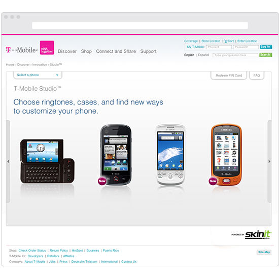
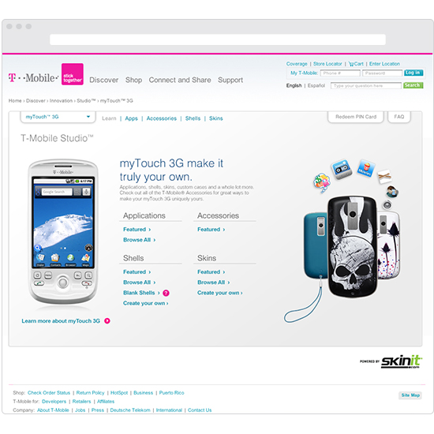

T-Mobile Studio
2010
T-Mobile Studio was a website showcasing the latest smart phones from T-Mobile around 2010, allowing the customer to customize their phone with covers, accessories, ring-tones, apps and other products. The current flash site wasn't meeting all the clients needs and our team was tasked with taking the non-flash back-up site and making it the new main site. Jumping into the project midway I worked with developers, UX designers, project managers, and the senior creative team to successfully deliver an upgraded new HTML site. From rethinking the navigation structure to refining the typography, we worked towards making the new site an engaging and seamless T-Mobile brand experience.
 